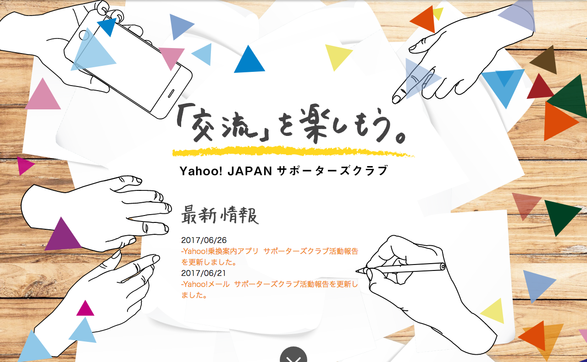
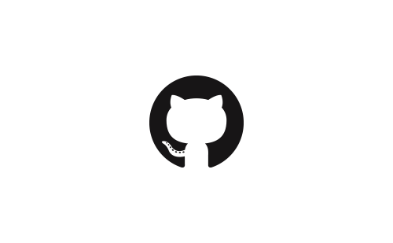
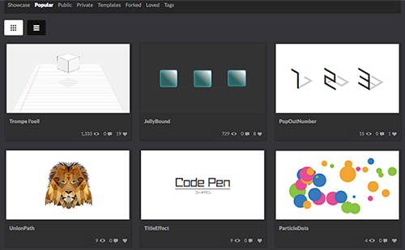

Product Yahoo! JAPAN 社内位置情報システム  会社の貸出端末から位置情報を取得し、マップ上に描画するシステムです。初期リリースはコーダー、以降の機能追加はディレクターでアサインしました。 関連記事 プロトタイプ Yahoo! JAPAN サポーターズクラブ 静的なコーディング及び、CMS(Movable Type)へのタグの埋め込みに加えて、ドキュメントを作成し、先方への運用面のレクチャーを行いました。 関連記事 制作ページ 株式会社マチスデザイン 渋谷にある建築会社のコーポレイトサイトのコーディングを担当しました。実績紹介のギャラリー部分は見せ方・実装含め、こちらから提案しました。 制作ページ
Study このページのソースコードと制作環境  gulp依存を無くす為に、npm + webpackでの制作環境を構築。css設計にflocssを採用しています。レスポンシブ対応。 github Union.js jQuery plugin グラフィックソフトで作成したsvgデータを一度パス単位で分解して、任意のタイミングで合体させるプラグインです。ページ内は広範囲の需要を想定して英表記に。 github 制作ページ CodePen  今後の案件で使える・使えない問わず、面白いと思った技術に対する演習をこちらにて行なっております。 CodePen